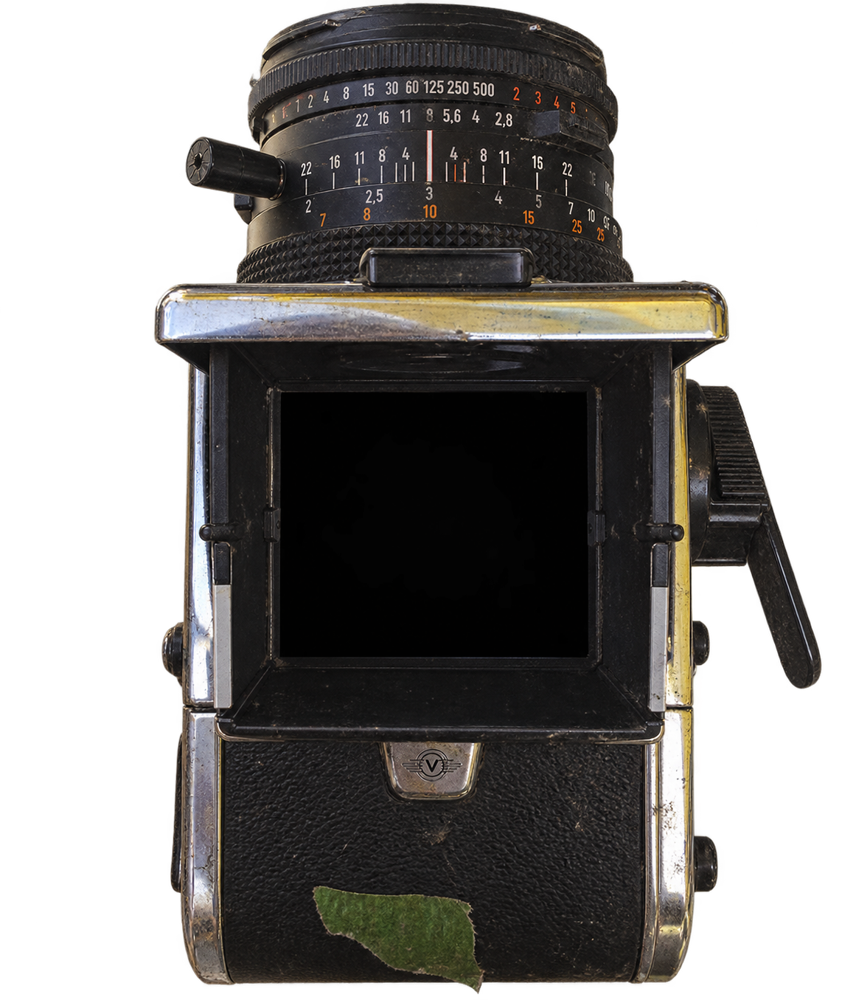
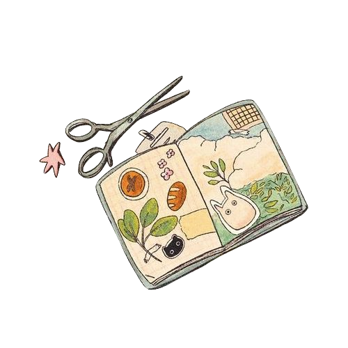
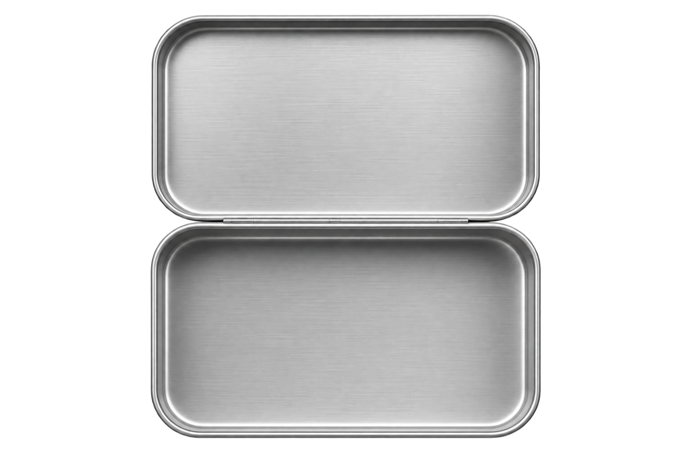

What
constellation
are you?
Your identity is not a fixed star. It is a map, shaped by the values you hold, the choices you make, and the paths you choose.
Find your way
among the stars.
For centuries, people looked to the stars to find their way.
Identity is much the same.
It is shaped by the values we hold, the choices we make, the people we meet and the paths we choose.
There are no right or wrong answers.
Simply choose the page that feels like it belongs to your story.
What shall
we call you?
Every constellation has a keeper. Add your name to begin your personal archive.
Bring along your
stars, you
At the Sports and Water Polo stations, you discovered two pieces of your story. Add them here so we can carry them through the Archive. Your melody will be chosen in the final entry.
Place yourself
in the archive.
Take a quick selfie for the photograph on your constellation card. Your image stays in this session and is not sent with your badge.

Allow camera access to begin.
Requesting camera access…
Choose your
keepsake style.
Pick the card colour that feels most like your constellation, then choose the little icons you want to carry in your tin.

CHOOSE A PAGE
Your guiding constellation is

Save this code to retrieve your constellation badge later.